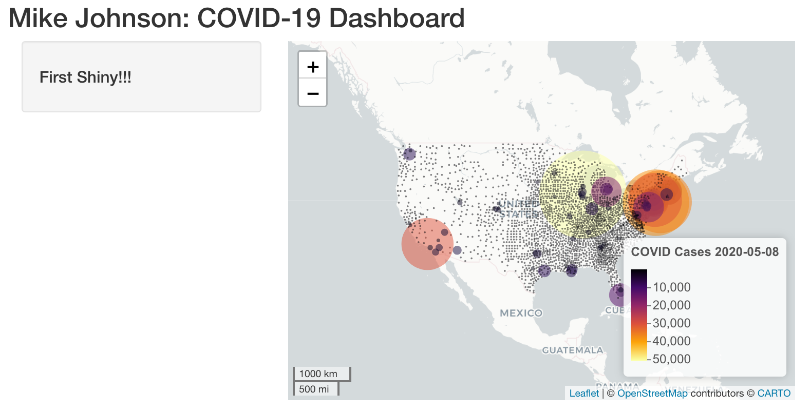
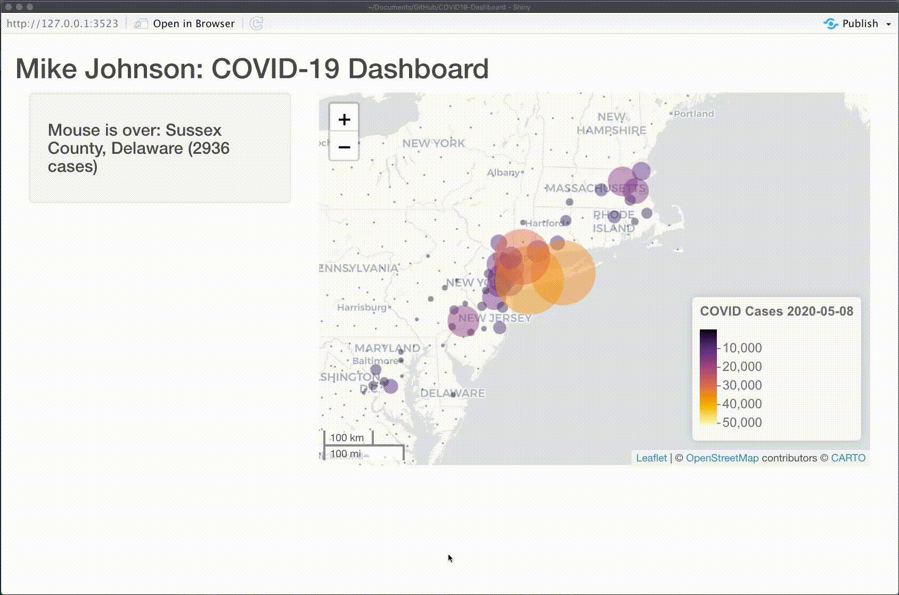

In the last section we set up the basic skeloton of a Shiny Application. In this section wwe ill demonstrate how to add your leaflet basemap to the Shiny ui and how observeEvent can be used to record how the mouse cursor interacts with the leaflet map.
Here is the UI object we ended with in the last section with a few modifications.
ui <- fluidPage(
titlePanel('Mike Johnson: COVID-19 Tracker'),
# Sidebar layout output definitions ----
sidebarPanel(
# Output: Message ----
textOutput("covid_message", container = h4)
),
# Main panel for displaying outputs ----
mainPanel(
# Output: Map ----
leafletOutput('covidmap')
)
)Notablly, we’ve added a sidebarPanel and mainPanel to the fluidPage to define how space on the page is distributed.
In the sidebarPanel we are going to display textOutput. We call the object it will display covid_message. The container fuction generates an HTML element to hold the text defined by the ‘h3’ HTML tag (think of this as the size of the text).
It is important here to recongnize that covid_message is a variable containing a rendered text (from the output list), and not a text string itself. We will define what covid_message equals in the server function and the UI will react to changes in variable.
In the mainPanel, we are going to display a leaflet object (from the output list) called covidmap. Here agian the UI only displays the covidmap object. All rendering, and modification of covidmap MUST occur in the server function.
Last time we set up our server function with parmeters called input and output. In a general sense:
UI and passed to the serverserver that are passed to the UI.Keeping your input and output lists aligned is what allows Shiny to generate reactive web applications.
Lets set up our server function to specify what the covid_message and covidmap actually store. We will save these to the output list so that the UI can make use of them! We save the rendered object to the map slot of the output list Slots are accessed with the $ symbol.
First, we must define a intial reativeValue to store the covid_message. In the scope of the reactiveValues list this object is called msg.
When you read a value from a reactiveValues list, the calling reactive expression takes a reactive dependency on that value, and when you write to it, it notifies any reactive functions that depend on that value.
Next, we create the covidmap obejct by rendering our basemap as a Leaflet object and saving it directly to the output list in the covidmap slot of the output list.
Last, we render our msg variable as Text and save it to the covid_message slot of the output list.
server <- function(input, output) {
# Global variables initialized ----
v <- reactiveValues(msg = "First Shiny!!!")
# Leaflet Map ----
# ---- must be rendered as leaflet ----
output$covidmap <- renderLeaflet({ basemap })
# Message to Display ----
# ---- must be rendered as text ----
output$covid_message <- renderText(v$msg)
} Great! We see our leaflet basemap is rendered, as is our default message “First Shiny!!!”. Now lets see if we can use the reactive capabilites of Shiny to modify the covid_message based on where the mouse cursor is on the Leaflet map.
This will be our fist detailed exploration of how Shiny can engage with user actions. Here we want to observe what the mouse is doing in the UI and pass information from the cursor back to server function through the input list.
In the server function, lets start by observing an event(observeEvent). The event we want to listen to is the mouse cursors interaction with the map object.
Now the mouse can do a lot of things with respect to a leaflet map, it can mouseover, mouseout, and mouseclick. When these actions occur with map markers, they are able to store the id of the marker. Remember that the marker ID was defined as the FIPS code in our basemap() function (see layerID = ~fips). That was why that variable was so critcial!
Generally our goal is that everytime the mouse cursor passes over a marker, it will change the UI message to something specfic to that marker.
To do this, in our observeEvent we will start listening the input list. The slot we want to observe is the covidmap, and more specifically, the covidmap_marker. In terms of the mouse action we want to listen for, we want to observe when the mouse movers over (mouseover) a marker.
So in the observer we are observing the covid_map_marker_mouseover, at anytime we can extract the id of the marker from the covid_map_marker_mouseover. Remember that the marker ID was defined as the FIPS code in our base_map() function (see layerID = ~fips). We use this id/FIPS code to subset the ‘today’ dataset and extract the prettified call we added:
We then change the reactive message in the v$msg to tell us the county/state pair the mouse is over, which will be rendered as text in the server function, and then passed to the UI to display.
observeEvent(input$covidmap_marker_mouseover, {
txt = filter(today, fips == input$covidmap_marker_mouseover$id)
v$msg <- paste0("Mouse is over: ", txt$name, " (", txt$cases, " cases)")
})But what happens when the mouse leaves the marker? Do we want the message to stay? Certainly not! So, lets add anthor listener with the
# So what happen once our mouse moves away from a marker? Well, we listen for that by observing the event of # the MOUSE, moving OUT (mouseout), of a MARKER, on a MAP object shown in the UI. # When this happens we change the reactive map message which is then shown in the UI
With those two new observers in you server function, lets once again run our Shiny App:

With that, you are ready to add more elements to your Shiny App. In the next section we’ll see add our dyGraph to our interface and syncing it with the leaflet map.